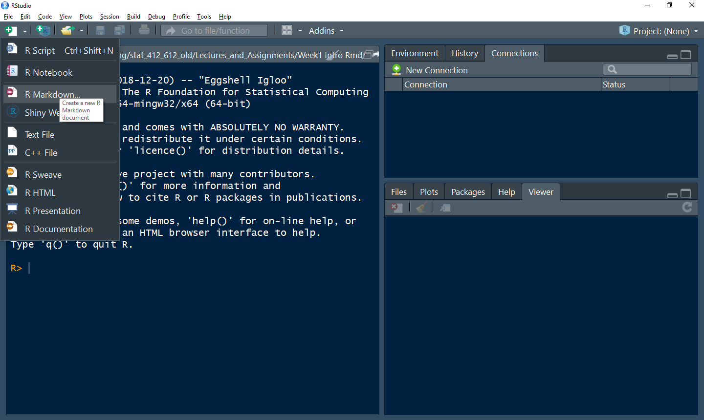
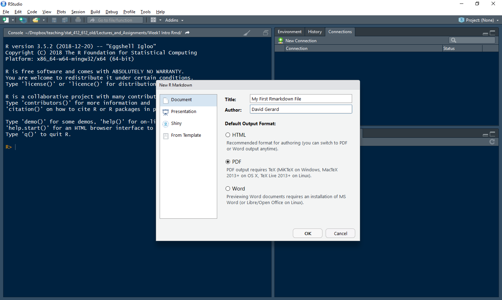

R Markdown is a file format that is a combination of plain text and R code.
A free book on R Markdown is available here: https://bookdown.org/yihui/rmarkdown/
You write code and commentary of code in one file. You may then compile (RStudio calls this “Knitting”) the R Markdown file to many different kinds of output: pdf (including beamer presentations), html (including various presentation formats), Word, PowerPoint, etc.
R Markdown is useful for:
You will use R Markdown for all assignments in this class.
You can install R Markdown from CRAN:
install.packages("rmarkdown")To make PDF files, you will need to install if you don’t have it already. To install it, type in R:
install.packages("tinytex")
tinytex::install_tinytex()If you get an error while trying to install tinytex, try manually installing instead:


You should now have a rudimentary R Markdown file.
Save a copy of this file in your “analysis” folder in the “week1” project.
R Markdown contains three things
---.```{r} and ```. Only valid R code should go in here.All of these are are displayed in the default R Markdown file. You can compile this file by clicking the “Knit” button at the top of the screen or by typing CONTROL + SHIFT + K. Do this now.
Here is Hadley’s brief intro to formatting text in R Markdown:
Text formatting
------------------------------------------------------------
*italic* or _italic_
**bold** __bold__
`code`
superscript^2^ and subscript~2~
Headings
------------------------------------------------------------
# 1st Level Header
## 2nd Level Header
### 3rd Level Header
Lists
------------------------------------------------------------
* Bulleted list item 1
* Item 2
* Item 2a
* Item 2b
1. Numbered list item 1
1. Item 2. The numbers are incremented automatically in the output.
Links and images
------------------------------------------------------------
<http://example.com>
[linked phrase](http://example.com)

Tables
------------------------------------------------------------
First Header | Second Header
------------- | -------------
Content Cell | Content Cell
Content Cell | Content CellYou can insert new code-chunks using CONTROL + ALT + I (or using the “Insert” button at the top of RStudio).
You write all R code in chunks. You can send the current line of R code (the line where the cursor is) using CONTROL + ENTER (or the “Run” button at the top of RStudio).
You can run all of the code in a chunk using CONTROL + ALT + C (or using the “Run” button at the top of RStudio).
You can run all of the code in the next chunk using CONTROL + ALT + N (or using the “Run” button at the top of RStudio).
My typical YAML header will looks like this
---
title: "Week 1 Worksheet: Installing R, Rmarkdown, Rbasics"
author: "David Gerard"
date: "`r Sys.Date()`"
output: pdf_document
urlcolor: "blue"
---All of those settings are fairly self-explanatory.
The full list of outputs supported is here: https://rmarkdown.rstudio.com/formats.html
The `r Sys.Date()` will insert the current date.
Sometimes, you want to write the output of some R code inline (rather than as the output of some chunk). You can do this by placing code within `r `.
I used this in the previous section for automatically writing the date.
my_name <- "David"Then “my name is `r my_name`” will result in “my name is David”.
For a more realistic example, you might calculate the \(p\)-value from a linear regression, then write this \(p\)-value in the paragraph of a report.